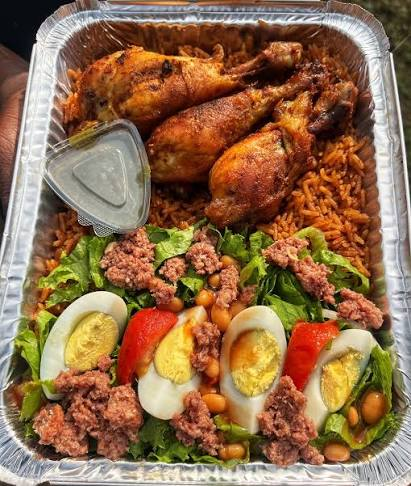

45 cedis
Spicy
Assorted Jollof
A rich medley of beef, chicken, and shrimp nestled in our signature smoky...
Experience the rich, smoky perfection of DIDI JOLLOF delivered straight to your table or door.

Imported directly from West Africa for genuine flavor.
Hot and fresh to your door in under 45 minutes.
Locally sourced produce prepared daily in our kitchen.
At DIDI JOLLOF, we don't just cook rice; we build layers of flavor. Our journey began with a family recipe passed down through generations, centering on the traditional method of fire-roasting tomatoes and peppers before slow-cooking.
It's this meticulous process that gives our Jollof its signature rich, smoky depth. We pair this base with the highest quality proteins and freshest vegetables, creating a modern dining experience that honors its deep culinary roots.
Learn More About Us ›